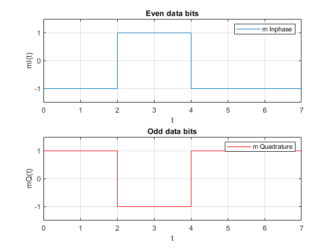
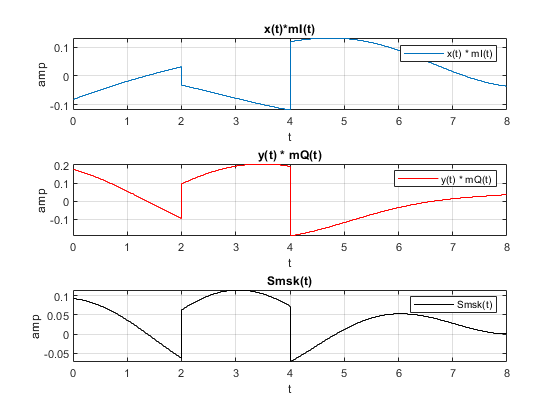
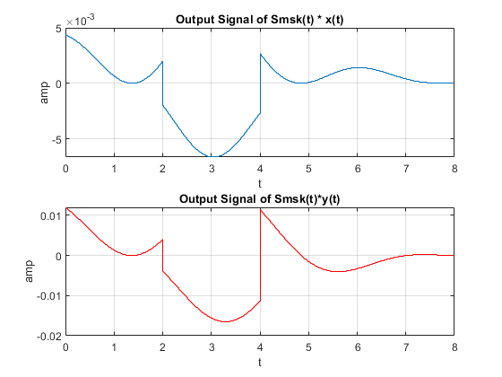
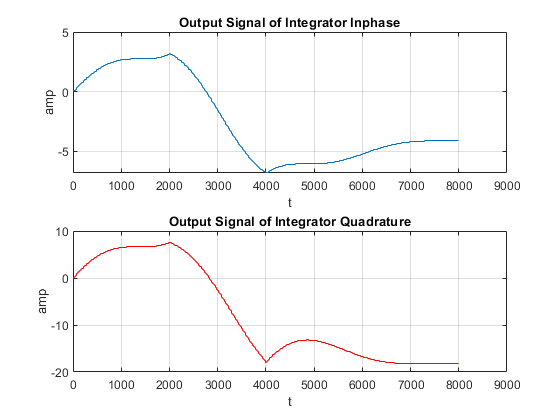

Contents
HW5
Teacher : Doctor_Mohammadi Author: [SeyedAli] - [SeyedHosseini] E-mail: [alishosseini79@aut.ac.ir]
%Student-Number : [9723042] % University: Amirkabir University of Technology
Q 2
Clear recent data
clc;
close all;
clear;
Initialization
clear; clc; %b = input('Enter the Bit stream \n '); %b = [0,1,1,0,0,1,0,1]; m = [0,1,1,0,0,1,0,1]; n = length(m); fs = 1e3; t = 0 : 1/fs : n; %time x = 1 : 1 : (n+2)*fs; %index for i = 1 :n if (m(i) == 0) b_p(i) = -1; else b_p(i) = 1; end for j = i:.1:i+1 m(x(i*fs:(i+1)*fs)) = b_p(i); if (mod(i,2) == 0) mQ(x(i*fs:(i+1)*fs)) = b_p(i); mQ(x((i+1)*fs:(i+2)*fs)) = b_p(i); else mI(x(i*fs:(i+1)*fs)) = b_p(i); mI(x((i+1)*fs:(i+2)*fs)) = b_p(i); end if (mod(n,2)~= 0) mQ(x(n*fs:(n+1)*fs)) = -1; mQ(x((n+1)*fs:(n+2)*fs)) = -1; end end end
Remake
m = m(fs:end); mI = mI(fs:(n+1)*fs); mQ = mQ(2*fs:(n+2)*fs);
Plotting
figure(1) subplot(211) stairs(t,mI) title("Even data bits") axis([0 7 -1.5 1.5]) xlabel ('t') ylabel('mI(t)') grid on legend('m Inphase') subplot(212) stairs(t,mQ,"r") title("Odd data bits") axis([0 7 -1.5 1.5]) xlabel ('t') ylabel('mQ(t)') grid on legend('m Quadrature')
Modulator
fc = 1/8; %carrier frequency MHz with Nyquist rate T = 8;%micro seceond clc; a = cos(2*pi*fc.*t) .* cos((pi.*t)/(2*T)); fH = fc + 1/(4*T); fL = fc - 1/(4*T); deltaf = fH - fL ; x1 = bandpass(a,[fH-deltaf fH+deltaf],fs); y1 = bandpass(a,[fL-deltaf fL+deltaf],fs);
Second part
xt = -x1 + y1 ; %after summation yt = x1 + y1; clc; XtxI = xt.*mI ; YtxQ = yt.*mQ; Smsk = XtxI + YtxQ; %Smsk(t)
Plotting
figure(2) subplot(311) stairs(t,XtxI) title("x(t)*mI(t)") %axis([0 7 -1.5 1.5]) xlabel ('t') ylabel('amp') grid on legend('x(t) * mI(t)') subplot(312) stairs(t,YtxQ,"r") title("y(t) * mQ(t)") %axis([0 7 -1.5 1.5]) xlabel ('t') ylabel('amp') grid on legend('y(t) * mQ(t)') subplot(313) stairs(t,Smsk,"-k") title("Smsk(t)") %axis([0 7 -1.5 1.5]) xlabel ('t') ylabel('amp') grid on legend('Smsk(t)')
Reciever
clc; S_rI = Smsk .*x1 ; S_rQ = Smsk .* y1;
Plottting
clc; figure(2) subplot(211) stairs(t,S_rI) title("Output Signal of Smsk(t) * x(t)") %axis([0 7 -1.5 1.5]) xlabel ('t') ylabel('amp') grid on subplot(212) stairs(t,S_rQ,"-r") title("Output Signal of Smsk(t)*y(t)") %axis([0 7 -1.5 1.5]) xlabel ('t') ylabel('amp') grid on
t0 = 1;
t1 = 1;
% Integerator
OutI = cumtrapz(S_rI);
OutQ = cumtrapz(S_rQ);
t1 = 1 : 2*T : length(t) ;
OutDecI =OutI(t1);
OutDecQ = OutQ(t1);
Decision
Plottting
clc; figure(4) subplot(211) stairs(t1,OutDecI) title("Output Signal of Integrator Inphase") %axis([0 7 -1.5 1.5]) xlabel ('t') ylabel('amp') grid on subplot(212) stairs(t1,OutDecQ,"r") title("Output Signal of Integrator Quadrature") %axis([0 7 -1.5 1.5]) xlabel ('t') ylabel('amp') grid on